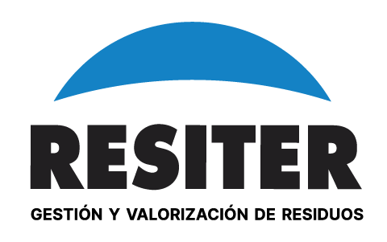

GESTIÓN Y CONTROL DE SERVICIOS
Selecciona la vista que quieres consultar.
Conciliación de toneladas y montos del EDP con sus tickets. Filtros, detalle de diferencias y descarga de reportes.
Vista para la revisión de densidades de residuos. Los criterios de chequeo y las fuentes se definirán para este panel.
Selección de un ticket o sorteo de 3 a 5 por EDP, unidad y período. Respaldos, comprobación manual y reportes PDF y CSV.